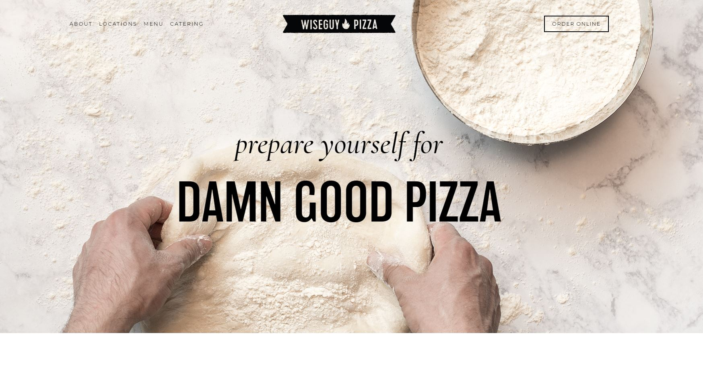

This website immediately catches your eye with a large central image of pizza. Being that pizza is what likely
would bring you to this page, it helps reinforce the idea that this resturaunt specializes in pizza. The pizza
picture also draws you eye to the button to find a nearby location so that you may aquire the aforementioned
pizza. An additional nice touch to this page is the presence of real reviews on the page to assure you of
the pizza's quality. The main issue I have with this website is that there is no clear directory to their menu.
Like Manhattan Pizza this wensite makes its signature item the centerpeice of the background: the hero sandwich.
Comparitively the sandwich is more a backdrop than in Manhattan's website. I like that the logo and navigation
menu are more front and center here, which makes it clear whose website this is and what pages are available.
This website also has its hours and location immediately available, though this is made easier by them having
only one location. They also clearly display a directory to a menu, which I felt was useful.
Continuing a theme of central food backgrounds is Joe's Pizza and Pasta. Joe, however, has a trick up his sleeve.
To represent his melding of pizza with other foods (i.e. pasta), Joe has a slideshow of different dishes which
cycle past automatically. Though it still starts on pizza, their most well known food, the slideshow serves to
give the viewer information on their other potential options at Joe's. Though I liked the presence on many easy
to find links and information, I felt the formatting was a bit dull. Though it does not appear in the image there
is a very comprehensive menu, split into categories, further down the page.
Eli's is a larger resturaunt group, of whch this location is one. Something easily identifiable at the front of
the navigation menu and would help if searching for any of their other locations. This webpage opted for a
different approach compared to the others: showing the actual resturaunt itself. There is no immediately visible
food, but considering the resturaunt is named after its location they appear to want to focus on that foremost.
Like Manhattan they have recent real life reviews very visable, but unlike Manhattan also have a easy to find
menu tab. I found this website very easy to navigate, even if there was less information on the front page.

For the last pizza website, and last website overall, there is Wiseguy Pizza. This website is quite minimalistic
and yet very bold. The large text of "prepare yourself for DAMN GOOD PIZZA" is great way of grabbing the attention
of anyone who passes by, while also staying completely on brand. The directory, while tucked slightly away, is
still easy to find and has all necessary information. I also like the approach of showing the pizza being made,
maintaining the idea that they specialize in pizza, but also leaving the mystery of what this 'damn good pizza'
looks like up to the imagination.